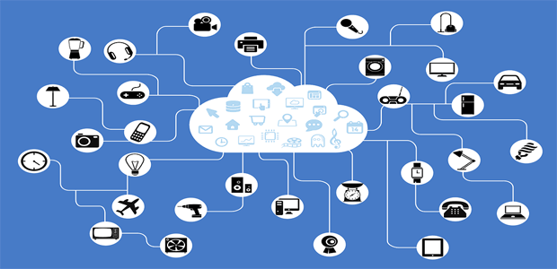

Most people speaks as if the World Wide Web and internet is the same thing, but they are not the same. In this article we hope to explain to you what is what, and what role each plays in the day and age.
The Internet:
The Internet is often refered to as WWW, but that could not be further from the truth. the Internet is a network of networks that connects computers and devices across the world with each other, thus making the internet much larger than the World Wide Web. These devices can easily connect or disconnect from the Internet, but the Internet as a whole does not get switched off like devices.

The World Wide Web
When you are online and see pages open then that is the World Wide Web. Although the World Wide Web and the internet is two different things like indicated, the World Wide Web uses the internet to fetch data required by the user and then the WWW displays it to the user. So we can almost describe the World Wide Web is a tool we use to gain access to and use the internet.